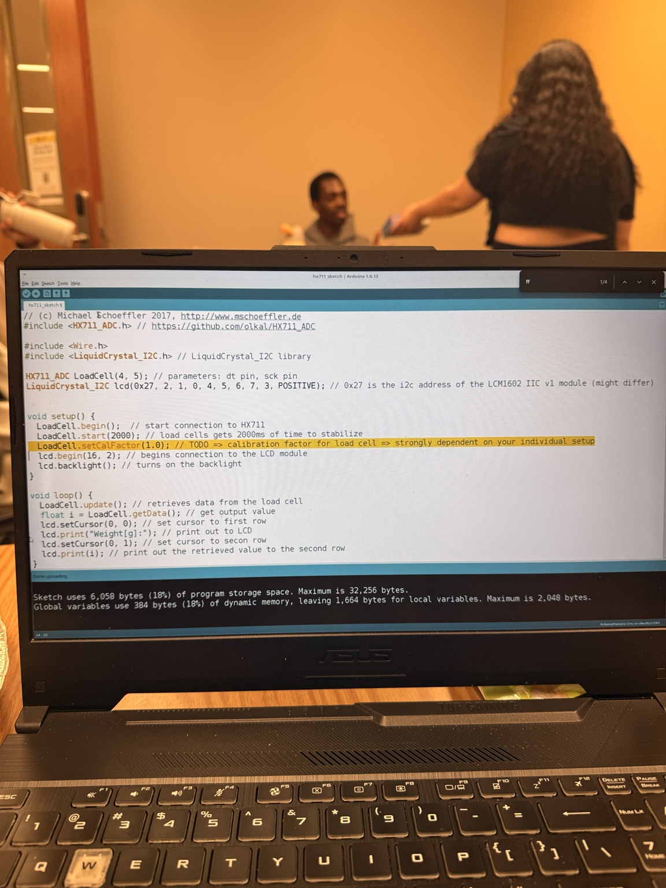
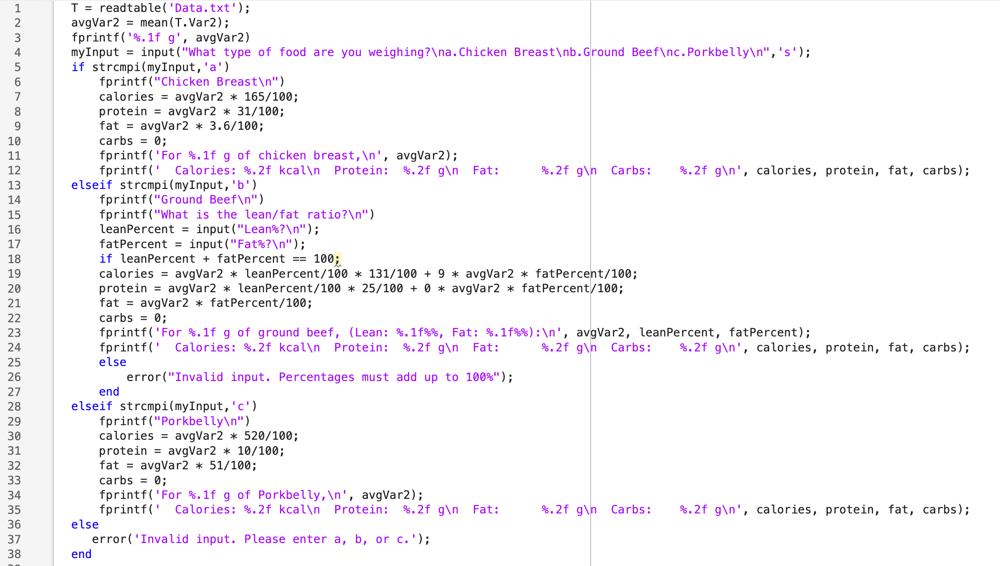

01 / The finished prototype

We built a functioning food-weighing prototype that connects a physical sensor to a computational nutrition tool. Instead of asking users to estimate serving sizes, the system measures a portion and uses that measurement to calculate an estimated nutritional breakdown.
My contribution: I was responsible for Arduino hardware setup, load-cell calibration and raw-data transfer to MATLAB, and I participated in integrating and testing the complete system. This was a team project with collaborators responsible for MATLAB programming, project coordination and presentation design.
02 / Why we built it
Calorie tracking is often tedious because people have to measure a serving, look up its nutrition information and scale the listed values to the portion they actually ate. Estimating portions by eye introduces error. Our goal was to connect the physical measurement and calculation steps in one affordable, functional prototype.
03 / How the system works
The Arduino and MATLAB portions worked together rather than requiring the user to manually copy a weight from one program to another. The food category or its nutrition information still had to be provided by the user: the system did not identify foods automatically.
04 / Arduino hardware and calibration
I assembled and connected the Arduino-based sensor system, including the load cell, HX711 interface and wiring. Calibration was important because the raw sensor output is not itself a food weight: the measurement must be zeroed and scaled so the readings correspond to a mass in grams.
The Arduino sketch shown here uses the HX711 library, initializes the load cell and outputs measurements. Our testing also required a rigid, level base and reliable electrical connections to reduce measurement noise.

05 / MATLAB processing and nutrition calculations

MATLAB received and processed the sensor readings, converted them to grams, and applied nutrition factors based on the selected food. Our code supported chicken breast, ground beef with a user-provided lean-to-fat ratio, and pork belly.
The calculation scales reference nutritional values to the measured portion:
For ground beef, we included a lean/fat percentage check to make sure the selected proportions totaled 100%. The code also calculated estimated protein, fat and carbohydrates using food-specific values.
Our MATLAB interface also supported serial connection controls, tare and scale-factor adjustment, and plotting readings over time to observe sensor behavior.
06 / Testing, challenges and solutions
Unstable sensor readings
Our main challenge was obtaining accurate, repeatable measurements from a sensitive load cell. A non-level surface, loose wiring and small vibrations—including table movement—could cause the reported weight to jump.
Engineering response
We improved electrical connections, including soldered joints, and replaced the load cell as part of troubleshooting. The experience showed why mechanical mounting, calibration and signal quality matter just as much as the calculation code in an integrated sensing system.
System integration
Arduino-to-MATLAB communication required attention to timing and calibration. Testing the complete workflow helped us isolate whether an incorrect output originated in the physical sensor, transferred data or nutritional calculation.
07 / Results and limitations
The team demonstrated a functional prototype: the load cell captured weight, MATLAB converted raw readings to grams, and the nutrition calculation produced the expected output for supported inputs. The project presentation describes a live demonstration of the weight-to-calorie workflow.
Current limitations: The user must specify the food or appropriate nutrition factor; the system cannot recognize an apple versus a cookie on its own. The load cell also exhibited drift over time, limiting long-term measurement consistency.
Future improvements: Add cumulative calorie tracking across multiple measurements, support more food types, and retrieve nutrition reference data from an online source rather than relying only on built-in factors.
08 / Project presentation
The original ENGR 1100 team presentation documents the design motivation, responsibilities, calculations, interface, troubleshooting, results and proposed improvements.
View full project presentation (PDF) ↗Team project credit: Charlie Han, Aiden Odame, Mariah Gomez and Miechilly Duong.